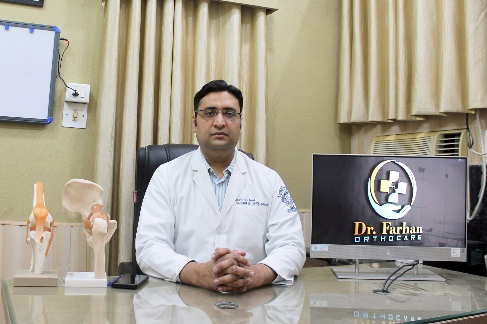
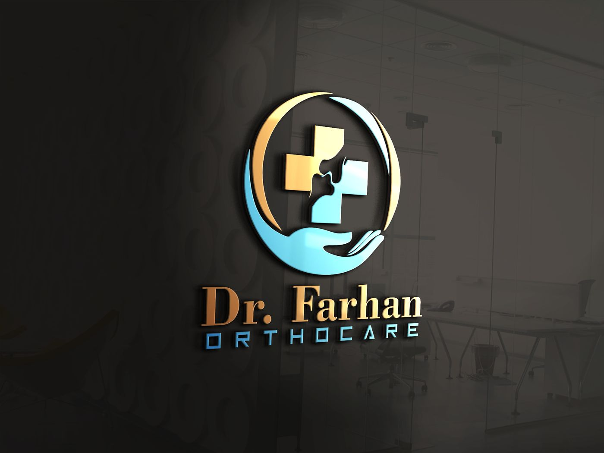
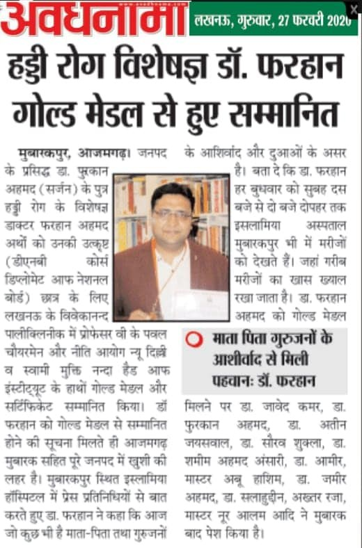

Total & partial knee replacement
For advanced arthritis — including out-patient knee replacement for suitable patients.
Dr. Farhan Orthocare · Azamgarh
Dr. Farhan Ahmad — Senior Orthopaedic Surgeon. Joint replacement, key-hole arthroscopy and complex fracture & trauma care.
हड्डी, जोड़ और चोट का भरोसेमंद इलाज — आजमगढ़ में, अनुभवी हाथों से।

डॉक्टर फ़रहान अहमद — वरिष्ठ हड्डी रोग विशेषज्ञ, एच. एम. सर्जिकल हॉस्पिटल, आज़मगढ़।

Dr. Farhan Ahmad is a Senior Orthopaedic Surgeon at H. M. Surgical Hospital, Azamgarh, where he leads the orthopaedics department’s joint replacement, arthroscopy and trauma work. He practises as Dr. Farhan Orthocare.
He completed his DNB in Orthopaedics at Vivekanand Polyclinic & Institute of Medical Sciences, Lucknow, and was awarded the Dr. Narottam Lal Gold Medal as the overall best DNB student of his batch. In 2022 he was conferred the Fellowship of the IMA Academy of Medical Specialities at IMA AMSCON, Kolkata.
His practice covers the full orthopaedic spectrum — hip and knee, foot and ankle, hand, wrist, elbow and shoulder, sports injuries, spine, paediatric orthopaedics and reconstructive work — supported by a fully integrated operating theatre, high-definition arthroscopy, a C-arm image intensifier and a dedicated trauma ICU.
Patients travel to him from across Azamgarh district and the towns around it. Consultation is unhurried: the diagnosis is explained, the options are laid out, and surgery is recommended only when it is genuinely the better answer.
Ten orthopaedic sub-specialities handled in one place — from a hairline fracture to a revision joint replacement.
Operated in a fully integrated theatre with quality implants, patient-specific instrumentation and live C-arm imaging.
For advanced arthritis — including out-patient knee replacement for suitable patients.
For fractured neck of femur, avascular necrosis and end-stage hip arthritis.
For irreparable joint damage and complex fractures around the shoulder and elbow.
ACL reconstruction, meniscus repair and shoulder arthroscopy on a high-definition integrated system.
From plaster application to internal fixation with quality implants, available round the clock.
Including distal femur dome osteotomy to realign the limb and offload a damaged knee.
Diagnosis, surgery and rehabilitation all happen in the same building — no running between towns for a scan.

Two awards that sit behind the name on the door.
Awarded for being the overall best DNB student of the batch — the distinction behind “DNB Ortho (Gold Medalist)”.
FIAMS, conferred at IMA AMSCON 2022 in Kolkata by the Indian Medical Association.

Published reviews from Google, reproduced as written.
★★★★★
Dr. Farhan is very cooperative and is very kind in behaviour, his medical experience is also really good. I personally visited him several times and I never had any complaint with him. In my opinion he is the best orthopaedic doctor in Azamgarh.
★★★★★
In all my years’ experience of visiting the hospital, without a shred of doubt, I had the best service experience here. The staff is friendly, knowledgeable and helpful. Nurses are both prompt and attentive — I trust their attention, and am impressed with their expertise.
Real cases from the Dr. Farhan Orthocare YouTube channel — from a Purvanchal Expressway accident to knee replacements that got people walking again.
अप्वाइंटमेंट के लिए नीचे दिया फ़ॉर्म भरें या सीधे कॉल करें। आपातकालीन स्थिति में कभी भी आ सकते हैं — ट्रॉमा सेवा 24 घंटे उपलब्ध है।
Look for the Dr. Farhan Orthocare sign inside H. M. Surgical Hospital.
Monday – Saturday
11:00 AM – 5:45 PM
Emergency & trauma: 24 × 7
H. M. Surgical Hospital
Bilariya ki Chungi, Namdarpur
Azamgarh, Uttar Pradesh – 276001
Get directions →
Instagram · Facebook · LinkedIn · X / Twitter · YouTube
Fill this in and it opens WhatsApp with your details already written out. Nothing is stored on this page.
Or call (+91) 914 069 3797 between 11:00 AM and 5:45 PM.
Bilariya ki Chungi, Namdarpur
Azamgarh, Uttar Pradesh – 276001